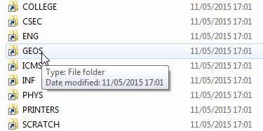

1. Introduction
Welcome to the installation instructions for LSDTopoTools, which is a collection of programs for analysing topography and modelling hydrology, landscape evolution and soil development.
LSDTopoTools is built for Linux operating systems. Wait stop!! Where are you going? Come back!! We are going to get this to work on your computer, honest!
Most users will not use a Linux operating system as their day-to-day operating system; Windows and MacOS are much more popular. However, through the either virtualisation or containers you can build a Linux environment within any operating system. In fact, building either a virtual machine or a container has the advantage of ensuring that everyone using these systems has the same environment. This precludes the "works on my machine" problem that is common amongst scientific software packages.
In these documents you will find four flavours of LSDTopoTools installation instructions:
-
Installation using VirtualBox + Vagrant. This method is the most tested. You might consider this the default method.
-
Installation using Docker. This has fewer steps than the VirtualBox+Vagrant method. The Docker method and the VirtualBox method are not compatible on Windows machines (using Docker on Windows breaks VirtualBox). It only works on Windows 10 Enterprise and MacOS. If you have one of these systems you might consider Docker.
-
Native installation on a Linux system. If your native operating system is Linux you can just install LSDTopoTools after getting all the libraries you need. The documents are made under the assumption that you use Ubuntu, but if you are a Linux user we are confident you’ll be able to port the instructions to your native system (usually this involves replacing
sudo apt-getwithsudo yum). -
University of Edinburgh installation. This software is developed at the University of Edinburgh and is used in teaching. We include instructions specific for Edinburgh students for use on the School of GeoSciences servers.
2. Installing LSDTopoTools using VirtualBox and Vagrant
Our most tested method uses two software packages, which are both free to download:
-
VirtualBox is software for creating virtual machines, which are implementations of operating systems that live in your host operating system (e.g., you can have a virtual Linux system operating within your Windows or MacOS operating system).
| As of 01-Nov-2017 Vagrant does not work with VirtualBox 5.2. Make sure you download Virtualbox 5.1 instead: https://www.virtualbox.org/wiki/Download_Old_Builds_5_1 |
-
Vagrant is software for managing and provisioning virtual machines.
| As of 22-Dec-2017 Vagrant 2.0.1 has conflicts with some ruby packages. Make sure you download Vagrant 2.0.0: https://releases.hashicorp.com/vagrant/2.0.0/ |
2.1. Quick instructions
2.2. Full instructions on setting up our Vagrant servers
2.2.1. First steps: Starting a Vagrant box
| You will need sufficient space on your hard disk to host a guest operating system. You also need room for the LSDTopoTools dependencies. You will struggle if you have less than 5Gb free. |
Vagrant is software that automates the creation and provisioning of virtual machines. What does that mean? It means that you will create a Linux server that runs inside of your day-to-day computer. This server will run even if you are using a different operating system (e.g., Windows). Vagrant machines can be configured using a vagrantfile, so you download our vagrantfile and you simply point vagrant to it and should get a working server that can run LSDTopoTools.
-
You need software for running virtual machines. We recommend virtualbox since it is both well supported and free. Download and install. Our instructions assume you are using virtual box. As of 01-Nov-2017 Vagrant does not work with VirtualBox 5.2. Make sure you download Virtualbox 5.1 instead: https://www.virtualbox.org/wiki/Download_Old_Builds_5_1
-
Download and install Vagrant. As of 22-Dec-2017 Vagrant 2.01 has conflicts with some ruby packages. Make sure you download Vagrant 2.0.0: https://releases.hashicorp.com/vagrant/2.0.0/
-
Vagrant works via command line, so you will need to know how to open a terminal on OS X, Linux (usually you can open one using
ctrl-alt-T, but if you use Linux that means you were born knowing how to open a terminal), or a Windows powershell. -
If you are working on Windows, you will probably have to restart after installing Vagrant so that Windows can register the path to Vagrant.
-
Okay, we now assume you have installed everything and are in a terminal or powershell. You need to make a directory where you keep information about your vagrant boxes. I made a folder names
vagrantboxesand then subfolders for different boxes. -
If you are in Windows, you will need an ssh utility to communicate with your vagrant box. You should download
putty.exefrom the putty website. In Linux and MacOS ssh utilities are already installed. -
Now you should fetch one of our vagrantfiles from our git repo: https://github.com/LSDtopotools/LSDTT_vagrantfiles
-
Rename the vagrantfile from the repo (either
Vagrantfile_32bit_FFTWorVagrantfile_64bit_FFTW) simplyvagrantfile -
If you use our vagrant files, you will need to make a directory
LSDTopoToolsin the same directory as your folders for different vagrant boxes. For example, you might make a directoryC:\VagrantBoxes\, and in that directory you can put bothLSDTopoToolsandUbuntu32_FFTW(or some such name) directories. You will put the vagrant file in theUbuntu32_FFTWdirectory. Your tree might look a bit like this:C:\vagrantboxes\ |--Ubuntu32_FFTW |-- vagrantfile |--Ubuntu64_FFTW |-- vagrantfile |--LSDTopoToolsIt is ESSENTIAL that the LSDTopoTools folder is present and is one directory level lower than the vagrant file. If this is not true, the vagrant machine will NOT WORK. In the above file structures the vagrantfiles have been renamed from the vagrant files in our repository. -
Go into the folder with the operating system you want (e.g.
Ubuntu32_FFTW):PS: > cd C:\VagrantBoxes PS: > cd C:\Ubuntu32_FFTW -
Now start your vagrant box (this might take some time since it has to fetch stuff from the internet):
PS: > vagrant upYou do not need to download a "base box" (that is a Linux operating system, in this case 32 bit Ubuntu) before you run vagrant up: Vagrant does this for you. However if you are runningvagrant upfor the first time Vagrant will download the box for you which will take some time (it is ~400Mb). You will only need to download the base box once. -
Congratulations! You now have a functioning Vagrant box!! Now you need to log on to the box.
If you want to update the base box you can use vagrant box updatecommand from the powershell or terminal windows.
2.2.2. Logging on to your Vagrant box
-
All right! Your Vagrant box is running. Other than a sense of vague accomplishment, this doesn’t really help you run LSDTopoTools. You need to log on to the box. You will operate your vagrant box as a server: you log into the machine and run code on it, but you won’t have pretty windows to look at. You will run everything through an ssh terminal, using a command line interface.
-
We do this using ssh.
-
If you are starting from a Linux or OSX machine, an ssh client is built into your command prompt and you can just type
vagrant sshinto the command prompt. -
If you are on Windows, you need to download putty.exe and run it.
-
In putty, set the host to 127.0.0.1 and the port to 2222. These are vagrant’s default settings.
-
You will need to add the RSA key to your cache (just say yes: remember you are not connecting to the internet where baddies can spy on you but rather a server running on your own computer).
-
Now you need to log in. Your vagrant box has a username of vagrant and a password of vagrant.
2.2.3. Your Vagrant box and file syncing
-
So you are logged in. Now what? It turns out Vagrant has done some clever things with your files.
-
Vagrant can sync folders across your Vagrant box and your host computer (that is, the computer you started vagrant from).
-
When you log in to your vagrant box, you will not be in the same folder where I have built the LSDTopoTools file structures. You need to navigate down to this:
$ pwd /STUFF $ cd .. $ cd .. $ pwd /STUFF $ cd LSDTopoTools $ ls STUFFYou can also jump directly there:
$ cd /LSDTopoTools -
As you can see above, the LSDTopoTools folder contains folders for different LSDTopoTools packages, for topographic datasets.
-
Here is the amazing thing: the files that are in LSDTopoTools folder in your vagrant box ARE ALSO visible, and synced, in your host computer. So if you use LSDTopoTools to do some analysis within your vagrant box, you will be able to see the files within your host computer as well. This means that you can, for example, do a Linux-based LSDTopoTools analysis and then plot that analysis in a GIS on your host windows box without having to transfer files. Not only that, but you can modify the code, update python scripts, change parameter files, etc., with your favourite text editor in Windows (or MacOS, or whatever) and those files will be visible to your Vagrant box. Fantastic!
2.2.4. Updating to the latest versions of the software
To check out the latest version of our software you can run the vagrant provision command
PS: > vagrant up
PS: > vagrant provision2.2.5. Shutting things down
When you are finished with your session, you just need to go into the powershell or a terminal and type:
PS: > vagrant halt2.2.6. If you want to start from scratch
If you want to remove the virtual machine, start it up and then run vagrant destroy:
PS: > vagrant up
PS: > vagrant destroy2.3. Troubleshooting a vagrant server
There are a few common problems people have when running a vagrant server.
2.3.1. Vagrant up doesn’t work
-
The first time you run
vagrant upyou will need to be connected to the internet as you need to download the base box (which is ~700Mb). -
If you are on an old computer, sometimes vagrant times out before the virtual machine boots. This most frequently happens the first time you boot a vagrant machine. The most effective way to fix this is with the canonical IT solution: turning it off and on again. To do that run
vagrant haltandvagrant upin succession.
2.3.2. I closed the window running vagrant: how do I shut it down?
-
Open virtualbox: you will see the vagrant machine. Simply power it off (from within virtualbox).
2.3.3. Vagrant hangs up in powershel or terminal window
-
If vagrant hangs up in the powershell or terminal window and does not give you back the command prompt, turn it off and on again by typing ctrl-c and then running the vagrant command again.
2.3.4. File syncing doesn’t work
-
If your files are not syncing across your host and vagrant machine, it is probably because there is some misspelling in your
LSDTopoToolsfolder on the host machine. Make sure that folder is in the correct place and is spelled correctly (remember it should be case sensitive!!). -
This also has emerged because of a conflict with the latest VirtualBox versions. Make sure you have VirtualBox 5.1 or lower. As of December 2017 VirtualBox 5.2 doesn’t work.
2.3.5. I get some crazy conflict about Ruby when I run vagrant up
-
This is an error associated with the latest Vagrant version. You need version 2.0.0 or lower. As of January 2018 Vagrant 2.0.1 doesn’t work.
2.3.6. I ran vagrant up. Now what?
-
You need to log on to the vagrant machine with either putty.exe (Windows) or by typing
vagrant ssh(Linux, MacOS) into the command line. See instructions for more details.
2.4. Technical details on vagrant
Here are some technical details on vagrant. Hopefully you will never have to read any of this.
2.4.1. Brief notes for setting up your own Vagrant server
| This section is for customising your vagrant environment (or rather, your Ubuntu environment that vagrant sets up for you) and can be safely ignored by 95% of LSDTopoTools users. We include the below notes for obsessive hackers who have nothing better to do. |
We have written Vagrant files for you so you don’t have to customise your working environment, but if you want to set up your own Vagrant boxes with your own software here are some notes.
Initiating a Vagrant box
-
Go into an empty folder to start a new Vagrant box.
-
Initiate Vagrant with:
PS> C:\> vagrant initAlternatively you can initiate with a
base box. In this example we use the Ubuntu precise 32 base box:PS> C:\vagrant init ubuntu/precise32 -
This command (
init) will simply make a vagrant file. To get the server up and running you need toupit. Before you do that you probably want to modify the vagrant file. -
One of the things you probably need to modify is the memory assigned to your guest vagrant box. In the vagrant file you should have:
config.vm.provider "virtualbox" do |vb| # Customize the amount of memory on the VM: vb.memory = "3000" endThe default memory is something small, and the problem with it is that it will take the guest operating system too long to boot, and vagrant will time out. I would give the vagrant box 3-4 Gb of memory.
-
Now you can
upyour vagrant box. In the folder with the vagrant file, type:PS> vagrant up -
If this is the first time booting the linux machine, this will take a while.
Notes on the base box
Vagrant sets up a Linux server living in your computer (it is called the Host computer). The server will run a Linux operating system, and you need to choose a functioning base system
vagrant base boxes. Here we have started with ubuntu/precise32. You might want to try other base boxes, they can be found at the atlas website.
| If you choose a base box that you do not already have (and you start with none), vagrant will download it. They are big!! Usually over 500Mb (each is a fully operational linux operating system). You will either need a fast internet connection or a lot of time. Make sure you also have enough room on your hard disk. |
You do need to be careful with base boxes!
| Not all base boxes work! On many windows machines, you can only run a 32 bit version of linux, even though you are almost certainly running 64 bit windows. You can change this by going into your BIOS and changing the settings, but that is dangerous and if you do not know what your BIOS is do not even think about attempting to change these settings. |
In testing, I found many bases boxes did not work at all. The one that worked well for me was the ubuntu/precise32 box. You can just vagrant init an empty vagrant instance and change the box in the vagrantfile with config.vm.box = "ubuntu/precise32".
You can update your base box with the command vagrant box update.
Details of provisioning
If you change your vagrantfile with the box still running, you can run the new provisioning with:
PS> vagrant provisionIf you have downloaded our vagrant files, the provisioning of your virtual server should be automatic. However, you may wish to know what is happening during the provisioning, so here are some notes.
To install software, we use the shell provisioning system of vagrant. This should go into the vagrantfile and will look a bit like this:
config.vm.provision "shell", inline: <<-SHELL
sudo apt-get update
sudo apt-get install -y git
SHELLIn the above shell command, we are installing git. The -y flag is important since apt-get will ask if you actually want to download the software and if you do not tell it -y from the shell script it will just abort the installation.
You sync folders like this:
config.vm.synced_folder "../LSDTopoTools", "/LSDTopoTools"Were the first folder is the folder on the host machine and the second is the folder on the Vagrant box.
3. Installing LSDTopoTools using Docker
3.1. Should I use Docker or Vagrant?
There are many, many, many articles comparing vagrant to docker. The docker setup is probably a bit simpler than the vagrant setup but (and this is a big but) it won’t work on a Windows machine unless you have Windows 10 Enterprise. It does work on any recent version of Linux and MacOS. However the developers of LSDTopoTools don’t have access to Windows 10 Enterprise so can’t test the Docker versions on Windows, so we can’t offer support of this installation option. However if you have MacOS, native Linux or Windows 10 Enterprise you should consider using Docker since it involves fewer steps than our VirtualBox+Vagrant setup.
3.2. The LSDTopoTools docker container
Docker is software for creating and managing containers. These containers are not complete operating systems, like one creates using VirtualBox and Vagrant, so the boot time is quicker. Docker is perhaps simpler to use but does not work on every operating system.
The instructions here are a slight modification of instructions from Aaron Friel.
To set up LSDTopoTools using Docker:
-
Download and install Docker for Windows (only works with Windows 10 enterprise), Docker for Mac, or Docker for Ubuntu or Debian.
-
On Mac we recommend installing docker using brew:
brew cask install docker -
Create a folder where you are going to put files associated with docker. In the examples I will assume these are in
C:\DockerBoxes\LSDTopoTools\. -
Run the following command in a command prompt or terminal for Mac or Linux (if you use Linux I am sure you don’t need instruction on how to open a terminal):
docker run --rm -it -v C:\DockerBoxes\LSDTopoTools\:/LSDTopoTools afriel/lsdtopotoolsNote that you will need to modify the path (here
C:\DockerBoxes\LSDTopoTools\) to reflect your own directory where you want your LSDTopoTools files. -
You should get a prompt that looks like this, perhaps with some different letters and numbers after the @:
root@9f73030d8598:/LSDTopoTools#
-
If this is your first time using the tools and your LSDTopoTools directory is empty, you will need to run the install script. In the prompt, enter:
install.shand hitenter. -
Some users have reported permissions problems with running
install.shon a fresh docker install. If this happens you need to run this commandchmod 0744 /bin/install.shto update the permissions on the install script and then runinstall.shas normal. -
Follow docker documentation for your operating system to start and shut down docker containers.
4. Installing natively on a Linux system
Our software is designed for linux operating systems but we do recommend you use either our VirtualBox+Vagrant setup or our Docker setup because in those two cases you will be using the same environment as the developers so it will be easier to answer questions when you have problems. However, if you just want LSDTopoTools on your Linux machine, follow these steps:
-
Start a terminal session.
-
Install some essential softare (we will use Ubuntu installation, you need to modify these if you are on another version of Linux). This assumes you have the GNU c++ tools:
$ sudo apt-get install -y git $ sudo apt-get install -y gdal-bin $ sudo apt-get install -y python-gdal $ sudo apt-get install -y libfftw3-dev $ sudo apt-get install -y cmake -
Go the the directory where you want to install LSDTopoTools.
-
Download our setup script.
$ wget https://raw.githubusercontent.com/LSDtopotools/LSDAutomation/master/LSDTopoToolsSetup.py -
Run the setup tool:
$ python LSDTopoToolsSetup.py -id 1The -idflag tells LSDTopoToolsSetup.py where to put the files. In vagrant it always starts in the root directory (this is for file syncing purposes). However, if your native operating system is Linux, then you can either install in your home directory (-id 0) or in the directory where you called LSDTopoToolsSetup.py (-id 1). -
If
wgetdoesn’t work, you can follow the link: https://raw.githubusercontent.com/LSDtopotools/LSDAutomation/master/LSDTopoToolsSetup.py
Copy the text, paste it into a text editor and save it asLSDTopoToolsSetup.py. -
The
LSDTopoToolsSetup.pytool has a number of options: if you want a preview of what it does, you can call its help options:$ python LSDTopoToolsSetup.py -h
5. Installing LSDTopoTools at the University of Edinburgh.
These instructions are for students and staff within the School of GeoSciences at the University of Edinburgh.
5.1. Mapping your network drive
You will need access to your data on the network drive to use LSDTopoTools. You only need to do this one in any computer lab (and possibly only once ever):
-
Open a file explorer window and under computer select the "University drive":
Figure 1. The university drive -
Then go into the Science and Engineering folder ("SCE"):
 Figure 2. The science and engineering folder
Figure 2. The science and engineering folder -
Then into the GeoSciences folder ("GEOS"):
Figure 3. The geosciences folder -
Then into the Drive Mapping folder ("drive_mapping"):
 Figure 4. The drive mapping folder
Figure 4. The drive mapping folder -
And finally double click the shortcut "Access Netdata":
 Figure 5. The access netdata shortcut
Figure 5. The access netdata shortcut
5.2. Getting on to our servers with NX
-
We will be working on the University of Edinburgh servers.
-
First you should start an NX session. NX is installed on all the computer labs in GeoScience (and in many other computer labs) Follow these instructions: https://www.ed.ac.uk/geosciences/intranet/it/linux-servers/nx
-
You will get something that looks like a desktop. Right click anywhere in the desktop and select "open terminal".
5.3. Using the LSDTopoTools setup script
-
Before you do anything you need to move onto a decent server (the ssh server is only for logging in). Type either:
$ ssh burnOR
$ ssh achray -
In this window type
cd ~. This takes you to your home directory. -
Download our setup tool by typing:
$ wget https://raw.githubusercontent.com/LSDtopotools/LSDAutomation/master/LSDTopoToolsSetup.py -
Run the setup tool by typing
$ python LSDTopoToolsSetup.py -id 0 -
You should now have LSDTopoTools directories installed in your home directory. You can always get to your home directory by typing
cd ~.
5.4. Testing the tool on Edinburgh servers
Now, if you want to test the tool:
-
Go to the example data directory:
cd ~/LSDTopoTools/Topographic_projects/LSDTT_workshop_data/ -
You want to add the path to the main program:
$ PATH=$PATH:~/LSDTopoTools/Git_projects/LSDTopoTools_AnalysisDriver/Analysis_driver;export PATHThis update to your path is only valid for your current terminal session. You will need to enter this command each time you start a new session. -
Download the path modification tool:
$ wget https://raw.githubusercontent.com/LSDtopotools/LSDAutomation/master/LSDTTParamfileUpdater.py -
run the tool
$ python LSDTTParamfileUpdater.py -
Okay, now tes the program:
$ LSDTT_BasicMetrics.out . WA_BasicMetrics01.driver -
If the program does some things and then says
I’m all finished! Have a nice day.it means it has worked!
6. Extra dependencies for swaths and point clouds
Some of our tools require the point cloud library. To get this working you need a few different utilities and libraries (take a deep breath):
-
The
cmakeutility. This is likemakebut is required for our tools that examine point clouds, since it is required by something called the point cloud library. -
pcl: The Point Cloud Library.
-
libLAS: a library for working with LAS format data.
Our Vagrant installation installs these automatically. The docker installation (since it is 3rd party) does not. However you can install on an Ubuntu system (and the Docker installation is Ubuntu) using the following instructions.
6.1. Install the Point Cloud Library
If you are using an older version of ubuntu there is a package. Newer versions of Ubuntu don’t have it, so you will unfortunately need to install by hand.
6.1.1. Ubuntu 14 and 12
This is relatively painless (we hope):
$ sudo add-apt-repository ppa:v-launchpad-jochen-sprickerhof-de/pcl
$ sudo apt-get update
$ sudo apt-get install libpcl-all6.1.2. Ubuntu 16.04 LTS
If you are using ubuntu 16.04, the above commands won’t work as the repository is broken. You can install the pcl library using the following steps:
Install oracle-java8-jdk:
$ sudo add-apt-repository -y ppa:webupd8team/java && sudo apt update && sudo apt -y install oracle-java8-installerInstall various dependencies and pre-requisites:
$ sudo apt -y install g++ cmake cmake-gui doxygen mpi-default-dev openmpi-bin openmpi-common libusb-1.0-0-dev libqhull* libusb-dev libgtest-dev
$ sudo apt -y install git-core freeglut3-dev pkg-config build-essential libxmu-dev libxi-dev libphonon-dev libphonon-dev phonon-backend-gstreamer
$ sudo apt -y install phonon-backend-vlc graphviz mono-complete qt-sdk libflann-dev libflann1.8 libboost1.58-all-dev
$ cd ~/Downloads
$ wget http://launchpadlibrarian.net/209530212/libeigen3-dev_3.2.5-4_all.deb
$ sudo dpkg -i libeigen3-dev_3.2.5-4_all.deb
$ sudo apt-mark hold libeigen3-dev
$ wget http://www.vtk.org/files/release/7.1/VTK-7.1.0.tar.gz
$ tar -xf VTK-7.1.0.tar.gz
$ cd VTK-7.1.0 && mkdir build && cd build
$ cmake ..
$ make
$ sudo make installInstall Point Cloud Library v1.8:
$ cd ~/Downloads
$ wget https://github.com/PointCloudLibrary/pcl/archive/pcl-1.8.0.tar.gz
$ tar -xf pcl-1.8.0.tar.gz
$ cd pcl-pcl-1.8.0 && mkdir build && cd build
$ cmake ..
$ make
$ sudo make installDo some clean up:
$ cd ~/Downloads
$ rm libeigen3-dev_3.2.5-4_all.deb VTK-7.1.0.tar.gz pcl-1.8.0.tar.gz
$ sudo rm -r VTK-7.1.0 pcl-pcl-1.8.0You should now have pcl installed on your system! You can do a small test of the installation if you want to:
$ cd ~
$ mkdir pcl-test && cd pcl-testCreate a CMakeLists.txt file and save this in the directory pcl-test:
cmake_minimum_required(VERSION 2.8 FATAL_ERROR)
project(pcl-test)
find_package(PCL 1.2 REQUIRED)
include_directories(${PCL_INCLUDE_DIRS})
link_directories(${PCL_LIBRARY_DIRS})
add_definitions(${PCL_DEFINITIONS})
add_executable(pcl-test main.cpp)
target_link_libraries(pcl-test ${PCL_LIBRARIES})
SET(COMPILE_FLAGS "-std=c++11")
add_definitions(${COMPILE_FLAGS})
Create a file and call it main.cpp:
#include <iostream>
int main() {
std::cout << "hello, world!" << std::endl;
return (0);
}
Compile the cpp file and then test it :
$ mkdir build && cd build
$ cmake ..
$ make
$ ./pcl-testOutput should be hello, world!
6.2. Extra libraries for the floodplain and terrace extraction
| As of January 2018 liblas does not compile on our vagrant server since liblas3 is not available for Ubuntu 12. We are working to fix this problem. |
You might find you need to install a couple of other libraries for the floodplain and terrace drivers to compile properly. If you are using Ubuntu, you can do this using the following commands:
$ sudo apt-get update
$ sudo apt-get install libgoetiff-dev
$ sudo apt-get install liblas-dev7. Installing the LSDTopoTools python toolchain
LSDTopoTools is written in C++ but also includes a number of automation and visualisation rountines written in python.
Because LSDTopoTools handles primarily spatial data, a number of python packages for handling spatial data are needed in the LSDTopoTools python toolchain. We have attempted to make setting up this toolchain as painless as possible using miniconda and conda environments.
Please see the chapter on LSDTopoTools visualisation for instructions on how to install the LSDTopoTools python toolchain.
8. Get a text editor!
A text editor isn’t part of LSDTopoTools but you need one to do anything. You will need to modify parameter files and you might even get to the stage of opening Pass:[c++] or Python scripts and editing them so you will need an editor.
If you are Linux native you probably chortle superiorly if you lean someone doesn’t use vi to modify files, but most students have usually only interacted with text files via a word processor.
A word processor (e.g., Word, or whatever fasionable software is on your fruit-based computer) will not work to modify code: these convert your text into binary files and add a bunch of formatting.
You need to work with raw ascii files, and for that you need a text editor. We like these:
-
Brackets is a multi platform text editor (it works on all operating systems) and is free. It has nice file navigation. This documentation was written using Brackets.
-
Atom is another multi platform editor. Similar to Brackets. Also free.
-
PSPad is a freeware text editor (it will ask you occasionally for a donation). I quite like it for Pass:[c++] code and other code since it has a quite nice built-in function navigator.
Appendix A: Using the LSDTopoToolsSetup.py script
To help you set up LSDTopoTools, we have written a series of modules in python that automate the creation of our standard directory structure, downloading of the source code and compiling the source code into programs. The script is called LSDTopoToolsSetup.py.
A.1. Getting the LSDTopoTools setup script
LSDTopoTools works in all popular operating systems (Windows, MacOS, Linux) by using Vagrant to create a Linux server within your host operating system: if you are not in a native Linux environment you should start a Vagrant server by following these directions.
Once you have done that, you should be able to ssh into a Linux session using putty.exe on Windows or the vagrant ssh command in MacOS and Linux.
Once you are in a Linux operating system, the easiest way to get the script is to use the utility wget:
$ wget https://raw.githubusercontent.com/LSDtopotools/LSDAutomation/master/LSDTopoToolsSetup.pyA.1.1. Alternatives to wget
You can also get the script by cloning the LSDAutomation repository:
$ git clone https://github.com/LSDtopotools/LSDAutomation.gitor you can got to the raw text of the file, then copy the text and paste into your favourite text editor (i.e. Brackets). You should save the file as LSDTopoToolsSetup.py.
A.2. Running the LSDTopoTools setup script
The setup script is a python script so you need python to run it. It should be run in Linux, so if you do not have a native Linux operating system the script should be run in your Vagrant server. Almost all flavours of Linux come with python installed as default (the Ubuntu system installed by our vagrantfiles is one example) so we will assume you have python.
The script requires parameters; if you run the script with no parameters, it will give you a message telling you what to do:
$ python LSDTopoToolsSetup.py
=======================================================================
Hello there, I am the going to help you set up LSDTopoTools!
You will need to tell me what to do.
If you are in vagrant, LSDTopoTools will always be installed in the root directory (\).
If you are not in vagrant,
LSDTopoTools will be installed in your home directory if you run this with:
python LSDTopoToolsSetup.py -id 0
Or your current directory.
(i.e., the directory from which you called this program)
if you run with this:
python LSDTopoToolsSetup.py -id 1
For help type:
python LSDTopoToolsSetup.py -h
=======================================================================A.2.1. Looking at all the LSDTopoToolsSetup options
You can call help for the LSDTopoToolsSetup.py script with:
$ python LSDTopoToolsSetup.py -hA.2.2. A default setup
In fact, there is no default setup, since you have to tell the tool where to install LSDTopoTools. You do this by using the -id flag.
-
If you select 0, LSDTopoTools will be installed in your home directory, which you can get to with the command
cd ~. -
If you select 1, LSDTopoTools will be installed in the current directory (i.e. the directory where the script is located).
-
If you are running a vagrant machine, these instructions will be ignored and LSDTopoTools will be installed in the root directory (you can get there with the command
cd \).
This will install a directory LSDTopoTools with subdirectories Git_projects and Topographic_projects. Each of these folders will clone subfolders from our github pages, and will compile the Analysis_driver as well as the chi_tool.
The directories will look like this:
/LSDTopoTools
|--Git_projects
|----LSDTopoTools_AnalysisDriver
|----LSDTopoTools_ChiMudd2014
|--Topographic_projects
|----LSDTT_workshop_data
|----Test_dataA.2.3. Other setup options
There are a number of other options on LSDTopoToolsSetup.py, which we will list here, as well as in the table below.
-
-CE TrueClone and compile the channel extraction programs used in Clubb et al, WRR, 2014. -
-MChi TrueClone and compile the tools for performing the chi analysis of Mudd et al., JGR-ES, 2014. -
-CRN TrueClone and compile the tools for calculating basinwide denudation rates from the cosmogenic nuclides 10Be and 26Al Mudd et al., ESURF, 2016. -
-cp TrueCheck the path names in all the subfolders inTopographic_projectsto reflect your own directory structure.
A.2.4. If you are running on native Linux
If your native operating system is Linux, you should be able to get LSDTopoTools working very quickly using LSDTopoToolsSetup.py without having to use vagrant. However, you do need to ensure that you have the utilities make, the gnu Pass:[C++] compiler installed, and also you need FFTW installed. If you are in Ubuntu installing FFTW is as easy as: sudo apt-get install -y libfftw3-dev. If you are in another flavour of Linux you will need to follow the full setup, which is described on the FFTW website. Once you have that stuff working, you can use LSDTopoToolsSetup.py to get everything working in a jiffy.
A.3. Table of LSDTopoToolsSetup.py options
| Flag | Input type | Description |
|---|---|---|
|
Integer, either 0 or 1 |
0 == home directory, 1 == current directory. If you are in vagrant it will ignore this option and install in the root directory. |
|
Boolean (either True or False) |
If this is True, installs the CAIRN CRN package for calculating basinwide denudation rates from the cosmogenic nuclides 10Be and 26Al Mudd et al., ESURF, 2016. |
|
Boolean (either True or False) |
If this is True, installs the channel extraction programs used in Clubb et al, WRR, 2014. |
|
Boolean (either True or False) |
If this is True, installs the tools for performing the chi analysis of Mudd et al., JGR-ES, 2014. |
|
Boolean (either True or False) |
If this is True, checks the pathnames of the parameter files |
A.4. The LSDTTParamfileUpdater.py script for updating directory names
We also provide a script for updating directory write and read names, called LSDTTParamfileUpdater.py. LSDTopoTools analyses require you to provide a parameter file that contains the instructions for running analyses. In that parameter file there are always instrutions for where you want to read the data from, and to where you want to write new data. These lines in the parameter file look like this:
read path: /my/directory/
write path: /my/directory/It is tedious to keep updating these every time you move data to a new folder, so you run the LSDTTParamfileUpdater.py to ensure that the path names are the same as the data directory. The script assumes you want to put your results in the same directory and your data.
You can download this script with:
$ wget https://raw.githubusercontent.com/LSDtopotools/LSDAutomation/master/LSDTTParamfileUpdater.pyThis script can take 0, 1 or 2 arguments.
-
With 0 arguments, the script updates the read and write path of every file in the current directory with the extensions
.driver,.LSDTT_driver, and.param. -
With 1 argument, the script assumes the argument is the directory of the data and updates the read and write path of every file in that directory with the extensions
.driver,.LSDTT_driver, and.param. -
With 2 arguments, the script assumes the first argument is the directory of the data and updates the read and write path of the file named by the second argument.
A.5. The LSDTT_path_adjuster.sh script for updating paths
We have included a bash script for modifying your terminal enviroment so that it "sees" the LSDTopoTools directories. This means that you can call LSDTopoTools programs from the data folders.
| Calling this script only updates the path for the terminal session from which it is called. It doesn’t not permanently modify your terminal environment. You need to run the script every time you start a terminal session. |
You can download this script with:
$ wget https://raw.githubusercontent.com/LSDtopotools/LSDAutomation/master/LSDTT_path_adjuster.shYou run the script with:
$ bash LSDTT_path_adjuster.shIf you get a permissions denied error, you can change these with:
$ chmod 0744 LSDTT_path_adjuster.shand then run the bash command once again.